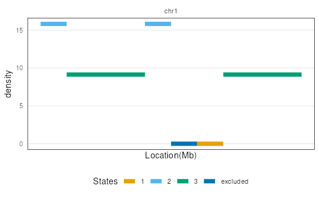
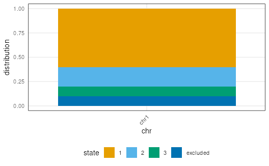
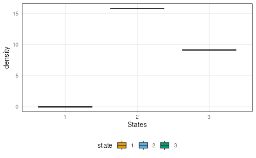

Plot genome segmentation
plotSegment(
seg,
exclude = NULL,
type = c("ranges", "barplot", "boxplot"),
region = NULL
)the segmentation GRanges returned by segmentDensity function
GRanges of excluded region
the type of plot returned. Choices are segmentation plot
included ranges information, barplot showing segmentation states' distribution across chromosome,
or a box plot indicating average density within each states.
Default is all plots are displayed.
The y axis "density" represent square root of overlap counts within segment length. If a user defined
segmentation GRanges is given, the y axis is default to be 1 for all states in segmentation plot.
GRanges of stricted region that want to be plotted.
A ggplot set by type argument
example("segmentDensity")
#>
#> sgmntD> n <- 10000
#>
#> sgmntD> library(GenomicRanges)
#>
#> sgmntD> gr <- GRanges("chr1", IRanges(round(
#> sgmntD+ c(runif(n/4,1,991), runif(n/4,1001,3991),
#> sgmntD+ runif(n/4,4001,4991), runif(n/4,7001,9991))),
#> sgmntD+ width=10), seqlengths=c(chr1=10000))
#>
#> sgmntD> gr <- sort(gr)
#>
#> sgmntD> exclude <- GRanges("chr1", IRanges(5001,6000), seqlengths=c(chr1=10000))
#>
#> sgmntD> seg <- segmentDensity(gr, n=3, L_s=100, exclude=exclude, type="cbs")
#> Analyzing: Sample.1
plotSegment(seg, exclude, type = "ranges")
#> Warning: `aes_string()` was deprecated in ggplot2 3.0.0.
#> ℹ Please use tidy evaluation idioms with `aes()`.
#> ℹ See also `vignette("ggplot2-in-packages")` for more information.
#> ℹ The deprecated feature was likely used in the nullranges package.
#> Please report the issue at
#> <https://support.bioconductor.org/tag/nullranges/>.

plotSegment(seg, exclude, type = "barplot")

plotSegment(seg, exclude, type = "boxplot")
